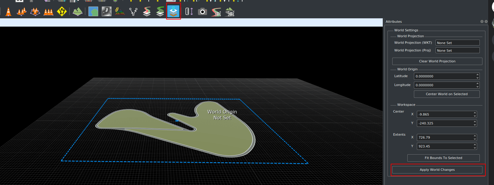
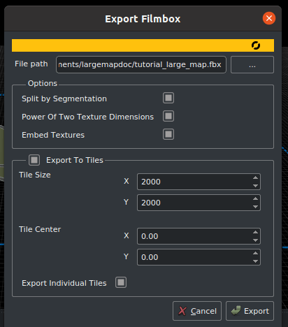

Create a Large Map in RoadRunner
RoadRunner is the recommended software to create large maps to be imported into CARLA. This guide outlines what RoadRunner is, things to consider when building the large map and how to export custom large maps ready for importing into CARLA.
- Introduction to RoadRunner
- Before you start
- Build a large map in RoadRunner
- Export a large map in RoadRunner
- Next steps
Introduction to RoadRunner
RoadRunner is an interactive editor that lets you design 3D scenes for simulating and testing automated driving systems. It can be used to create road layouts and accompanying OpenDRIVE and geometry information. Find out more about RoadRunner here.
RoadRunner is part of the MATLAB Campus-Wide Licenses, so many universities can provide unlimited academic access. Check if your university has access. Reach out to automated-driving@mathworks.com for any questions or troubles regarding accessibility. There is also a trial version available.
A license for RoadRunner is also available to everyone participating in the CARLA Leaderboard. Click here for more information.
Before you start
You will need to install RoadRunner. You can follow the installation guide at the Mathworks website.
Build a large map in RoadRunner
The specifics of how to build a large map in RoadRunner go beyond the scope of this guide, however, there are video tutorials available in the RoadRunner documentation.
If you are building a large map with elevation, the recommended largest size of the map is 20km by 20km. Maps larger than this may cause RoadRunner to crash on export.
Export a large map in RoadRunner
Below is a basic guideline to export your custom large map from RoadRunner.
Once you have made your map in RoadRunner you will be able to export it. Be aware that the road layout cannot be modified after it has been exported. Before exporting, ensure that:
- The map is centered at (0,0) to ensure the map can be visualized correctly in Unreal Engine.
- The map definition is correct.
- The map validation is correct, paying close attention to connections and geometries.

Once the map is ready, click on the OpenDRIVE Preview Tool button to visualize the OpenDRIVE road network and give everything one last check.

Note
OpenDrive Preview Tool makes it easier to test the integrity of the map. If there are any errors with junctions, click on Maneuver Tool, and Rebuild Maneuver Roads.
Make sure the full map is selected for export by clicking on the World settings tool and dragging the edges of the blue boundary box to encompass the full area you would like to export. when it's ready, click on Apply World Changes.

When you are ready to export:
1. Export the .fbx:
- In the main toolbar, select
File->Export->Firebox (.fbx)
2. In the window that pops up:
- Check the following options:
- Split by Segmentation: Divides the mesh by semantic segmentation and imroves pedestrian navigation.
- Power of Two Texture Dimensions: Improves performance.
- Embed Textures: Ensures textures are embedded in the mesh.
- Export to Tiles: Choose the size of the tiles. The maximum size that can be used by CARLA is 2000 x 2000.
- Export Individual Tiles: Generates the individual tiles needed for streaming large maps in CARLA.

3. Export the .xodr:
- In the main toolbar, select
File->Export->OpendDRIVE (.xodr)
Warning
Make sure that the .xodr and the .fbx files have the same name.
Next steps
You are now ready to import your map into CARLA. See the Import a Large Map guide for more details.
If you have any questions about the process, then you can ask in the forum.